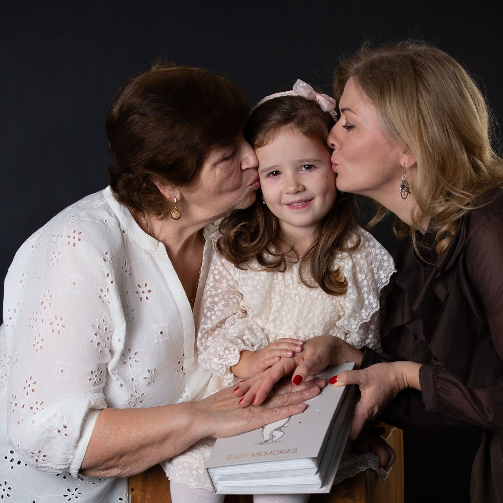
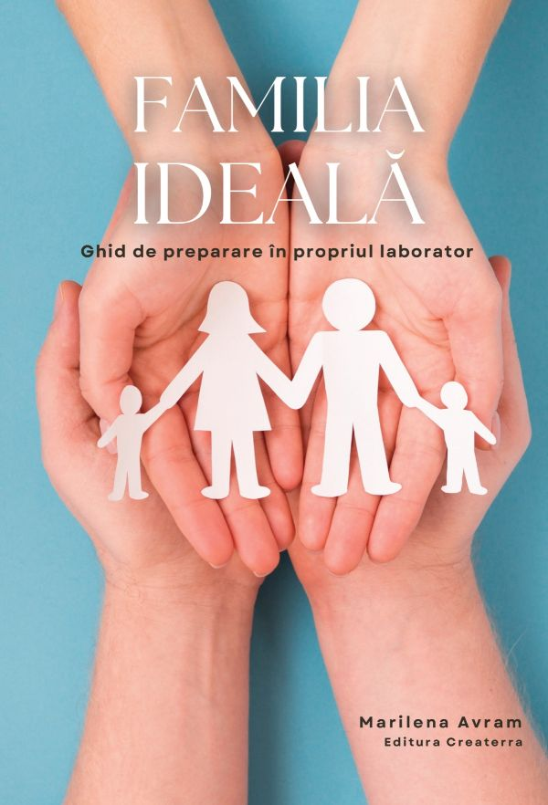

Când trecutul se așază, se așază și viața ta.
(Pornește filmul, cu sunet și subtitrare)Un minut despre rădăcini.
(Ce îmi spun mamele)
Poate ai spus-o și tu.
„Mi-am jurat că n-o să fiu ca mama.
Și uite-mă, tot eu tac și cedez.”
„Mă simt vinovată
și când stau
o oră la o cafea
cu o prietenă.”
„Iar ne-am certat
pe același lucru.”
„Fac orice,
numai să fie liniște.”
Există și o liniște în care se aude vocea ta. Tiparul vine de acasă. Și se poate schimba.
(Despre mine)
Sunt Marilena. Am fost și eu acolo.

Sunt fiică, soție, mamă și soră. Am crescut cu un tată aspru și distant și, fără să-mi dau seama, am dus aceeași poveste în familia mea. Totul s-a schimbat când am încetat să caut vinovați și am făcut pace cu părinții mei.
- Coach de familie acreditat
- Peste 15 ani în vânzări
- Creatoarea Oracolului Familiilor
- Facilitatoare atelier „Armonie în familie”

Copiii tăi învață din felul în care te împaci.
(Ce găsești mai jos)
Te pot ajuta în trei feluri.
(Programul de coaching)
Laboratorul Familiei.
Familia ta e laboratorul. Șase săptămâni, online, o întâlnire pe săptămână și un pas mic pe zi, în caietul tău. Lucrăm doar cu tine.
-
Vezi de unde vii.
Săptămânile 1 și 2
- Unde ești acum.O ceartă reală și rolul tău în ea.
- Ce ai adus de acasă.Mama și tata, cu bune și cu rele. Faci pace cu ei, măcar în sufletul tău.
-
Îți găsești vocea.
Săptămânile 3 și 4
- Tu, pe lista ta.Timp pentru tine și un „nu” spus calm, fără scuze lungi.
- Când începe cearta.Un cuvânt de pauză și uneltele de negociere din 15 ani de vânzări. Întrebarea devine „ce vrea fiecare”.
-
Casa ta primește reguli simple.
Săptămânile 5 și 6
- Regulile casei.Câteva reguli simple și o discuție de 20 de minute, duminica.
- După ceartă.Împăcarea și planul tău pentru după program.
În 6 săptămâni înveți să spui ce te deranjează, să spui „nu” fără vinovăție și să știi ce faci când începe o ceartă.
Ce spun alții.
„Am participat la workshop-ul Marilenei și am avut conștientizarea că pot să îmi iau responsabilitatea asupra relațiilor pe care le am cu familia, cu prietenii, cu oamenii din jurul meu, să ies din judecata că ei ar fi în «feluri și feluri» închipuite de mine, și să îmi pun întrebarea «Cum sunt eu în aceste relații?». De acolo am schimbat perspectiva, și în același timp, am restaurat relația cu oamenii dragi mie.”
(Cartea)
„o carte scrisă cu vulnerabilitate și autenticitate”
Familia ideală există, e în mâinile tale.

Din deschiderea cărții, pagina 4.
„Dacă ai obosit să repeți tipare, dacă ai obosit să cauți vinovați, răni și traume, atunci cartea asta este pentru tine.”
Marilena Avram, pe coperta a patra
Ce îmi doresc să obții? Liniște în suflet, împăcare cu trecutul, cu familia de origine și relații conștiente în prezent.
Ce găsești înăuntru? Un dialog imaginar între mine și fiica mea, în zece capitole, fiecare despre o altă „familie”: de origine, educațională, profesională, de comunitate și de cuplu.
Comandă carteaIa varianta eBook
Familia Ideală. Ghid de preparare în propriul laborator. Editura Createrra, 2025. Tipărită sau eBook.
(8 întrebări, câteva minute)
Testul gratuit.
(Prima întrebare)
„Când apare o neînțelegere, ce se întâmplă în primele minute?”
- „Tonul crește repede și unul dintre noi spune ceva ce regretă.”
- „Unul dintre noi tace sau iese din cameră.”
- „Știu deja cum se termină, am mai trăit-o de multe ori.”
- „Pornim încordați, dar reușim să ne calmăm și să vorbim.”
Pe pagina testului alegi răspunsul tău. La final primești tiparul după care tind să se poarte certurile tale și un pas mic pentru mâine, într-un raport de descărcat.
Fă testul gratuit(Despre Laboratorul Familiei)
Iată ce mă întreabă mamele.
Trebuie să vină și partenerul meu?
Lucrăm doar cu tine. E de ajuns să se schimbe un om ca să se miște tot sistemul.
Ce se întâmplă în discuția gratuită?
Te ascult și îți spun sincer dacă programul ți se potrivește. Durează 30 de minute, online, fără nicio presiune.
Am mai încercat cărți și terapie. De ce ar merge acum?
Lucrăm pe ce faci zi de zi, cu pași mici, și sunt lângă tine când îți vine să renunți.
Problemele dispar după cele 6 săptămâni?
Sincer, nu promit asta. Când crești, rezolvi unele probleme și apar altele. Important e să ai un sistem pentru orice apare.
E terapie?
Este coaching și nu înlocuiește terapia sau consilierea de cuplu.
Uneori ai nevoie de alt sprijin.
Dacă în casă există violență, amenințări sau te simți în pericol, primul pas e siguranța ta.
- 0800 500 333Linia gratuită pentru victimele violenței domestice.
- 112În caz de urgență.